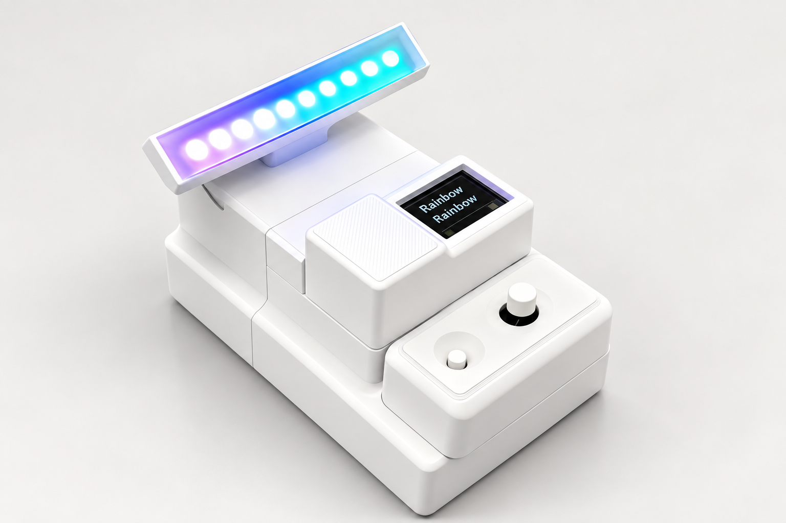
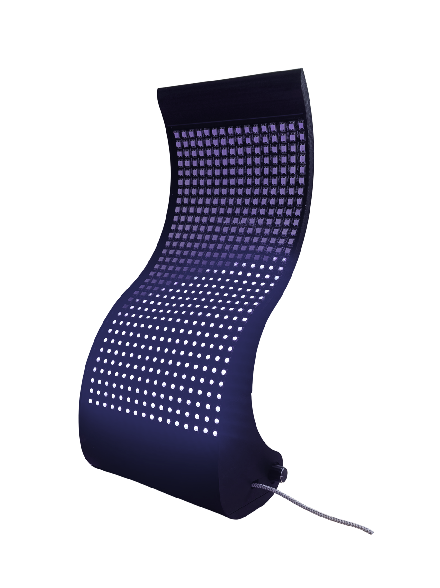

Virtual project 01
Project material to be added
Cornell University · Designer & undergraduate researcher
Product design × VR design
I design hands-on products and immersive environments, using prototypes to explore how people perceive, interact and connect.
My research focusHuman–computer interaction · Virtual–physical prototyping
Design + Environmental Analysis
Cornell University
Class of 2027
A developing body of work
Product and virtual design,
connected by human-centered inquiry.
Portfolio in progress · Explore LooMi and Droplet. Four project spaces are reserved for forthcoming material.
One practice / Multiple forms
Physical objects and virtual environments offer complementary ways to ask questions about interaction.

Light, touch & emotional connection
Project material to be added

Turning physical movement into light
Project material to be added
Project material to be added
The connecting thread
What changes when an experience is made physical, simulated virtually, or tested with people?
Research directionProject material to be added
Research direction
How does the way we interact—through an object, an avatar or our hands in VR—shape our experience?
My honors thesis at DUET Lab compares desktop avatar-based shopping with immersive hand-tracking VR. I built both environments and designed a controlled study with matched products, layouts and tasks.
Build interactions in Unity and Spatial.io, or with Arduino and fabricated parts.
Use controlled tasks, behavioral data, think-aloud testing and usability surveys.
LooMi evolved through three prototype generations and evaluation with five participants.
Behind the prototypes
Chunho (Jerry) Wong
Cornell University · Ithaca, New York
I’m a Design + Environmental Analysis student at Cornell, working across product design, VR and human–computer interaction.
My practice moves between the workshop and virtual environments: wiring sensors, fabricating enclosures, developing hand-tracking interactions, and studying how people use what I build. I also teach digital fabrication as a student technician at Cornell.
LooMi studio image: AI-assisted presentation rendering based on the original product. Prototype footage and research evidence are available in the case study.